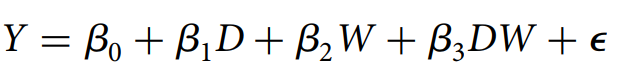
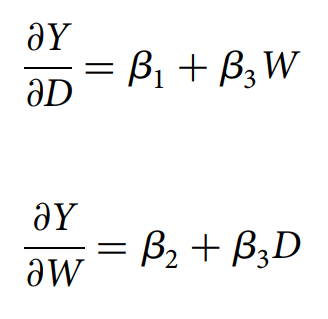
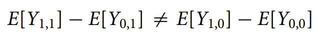
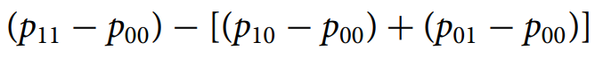
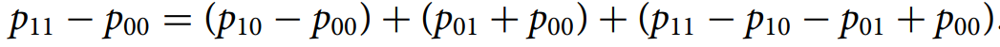
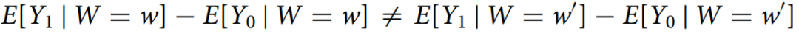
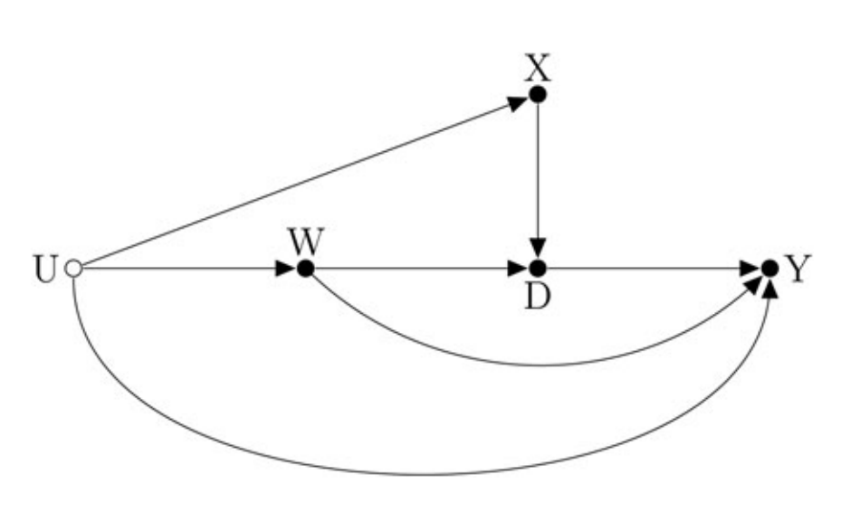

收录于合集
文献来源： Luke Keele and Randolph T. Stevenson (2020). “Causal interaction and effect modification: same model, different concepts.” Political Science Research and Methods, pp.1-9.
作者简介： Luke Keele，宾夕法尼亚大学教授；Randolph T. Stevenson，莱斯大学政治学系教授
导论
政治科学研究中的交互效应分析是用来进行效应依赖性（effect dependency）的研究。虽然目前有大量文献基于统计模型来对估计和解释交互效应，但是少有文献关注交互效应分析和因果推断的联系。而在因果推断和交互作用的文献中，一个很重要的区分就是因果交互效应（causal interaction）和调节效应(effect modification)的划分。在因果交互效应中，分析者对多个处理效应在单独起作用的情况下和同时起作用的情况下之间的区别感兴趣。而在调节效应中，单一处理效应是否随协变量的变化而变化。但是尽管二者的解释是不一样的，两种方法都使用了同一个统计模型。作者认为这两个方法之间存在差异，需要加以区分。
统计上的交互作用
在统计学中，交互作用用于线性或者广义线性模型以进行“效应依赖性”（effect dependency）的操作化。假设有一个样本量为N的总体，存在一个结果变量Yi和两个协变量Di以及Wi，用线性模型来描述这三个变量之间的关系如下（最后一项是误差项）：

那么“效应依赖性”就可以通过D或者W的边际效应来体现，即对D或W的偏微分：

也就是D（W）的边际效应取决于W（D），这就是定量形式的交互作用表达方式。
然而上式存在一个问题，正如Franzese and Kam (2009: 16)所说，交互效应是对称的，它们都影响着对方对结果变量的作用效果，所以称一个变量是调节变量、另一个变量是被调节变量，这种说法是不合适的。也就是说，上式反应了D和W之间的边际效应，但没有对这种对称性提出解释。所以这就需要根据具体情境来进行判断，即（1）当研究者关心两个变量的相关关系而不做因果推断的时候，这种交互作用就可以视作是对称的；（2）如果研究者希望对因果效应进行估计的话，那么就需要根据研究的性质来判断交互作用的方向性，判断哪个变量是调节变量。
因果交互作用
首先，假设研究对D和W的因果效应感兴趣，假定D和W是二元处理变量（1为实验组，0为对照组）。所以整个样本可以依据是否接受二者的处理从而分为四类。那么如果D和W如果满足下式，则二者存在交互效应：

也就是说，如果两个处理效应同时考虑的结果和单独考虑的结果不相同时，说明二者存在交互效应。交互效应量为：

这种估计表示两种效应共同考虑的结果比单独考虑的结果之间的差异。进一步地用一个等式来表达这种联合处理效应和单独处理效应的关系（VanderWeele, 2015, ch. 9）：

上式中，p10-p00是W的效应，p01-p00是D的效应，p11-p10-p01+p00是W和D的联合效应，这些效应量和前述的线性模型的协方差系数是可以一一对应的。
作者列举了Brader et al. (2008)的例子来说明他的分析。Brader et al. (2008)研究媒体刺激对移民态度的影响。他们假定移民成本的信息和移民者的种族会影响态度，同时也会影响政治参与。故他们设计了一个随机实验，使用了两个处理。第一个处理是被试者阅读一份强调移民成本的文本，第二个处理是关于白人移民和西班牙裔移民的信息。实证分析结果表明，两种处理之间是存在交互效应的。一个结果是被试者决定是否向他们所支持的议会议员提出反移民的要求。在控制组中，32%的人选择了是，而单独来看两个处理效应，统计上均不显著。当两个处理同时存在时，选择是的人的比例上升了14个百分点。所以，单独的处理效应并不显著，而联合处理效应是显著的，这就是所谓的“充分因果交互效应”（sufficient cause interaction）。
调节效应
调节效应，又叫“条件平均处理效应”（conditional average treatment effect）。假定D是处理，W是使用D之前的一个基准协变量，也被称为“调节因子”（effect modifier）。调节效应下，我们仅关注D的因果效应。所以，当下列不等式成立的时候，调解效应存在：

在调节效应分析中，分析者感兴趣的是D的因果效应是否随着W的变化而变化。

上图是调节效应的示意图。也就是说，在考虑了X和W的影响后，D的影响是可识别的，而W的影响未知。但是因为调节效应的目的是为了分析D的因果效应，所以并不考虑W的效应大小，只考虑W的变化给D的因果效应带来的影响。此外，在调节效应分析下，交互项的对称性就不再被纳入考虑范围中，尽管在数学上依然存在，但是在因果推断上这种作用就不再存在了。所以研究者会计算在考虑W的情况下D对Y的边际效应，而计算W对Y的边际效应是毫无意义的。
接着，作者提出在应用过程中需要注意的几点问题。首先，调节因子是先于解释变量（在这里指的是处理变量）而存在的，所以处理变量不能对调节因子有任何影响，这是造成统计偏误的重要缘由之一（Rosenbaum. 1984），所以需要先测量调节因子。当然，有时虽然可以在处理后再测量调节因子，但是这需要更加关注额外的强假设(Stephens et al. 2016)。最后，调节效应和因果交互效应并不是相互排斥的概念，学者们也可以设定第三个基准变量来测量因果交互效应下的调节效应。但是，问题在于研究者们往往不清楚他们的分析到底是交互作用还是调节作用，但是这一区分是非常重要的。
其一、这一区分关乎因果识别策略的数量。因果交互效应需要多个识别策略，而在调节效应中只需要一个识别策略；
其二、这一区分关乎对结果的解释。在因果交互效应中，研究者关注两个处理的联合效应。而在调节效应中，研究者只关注单一处理变量在不同调节因子水平下的边际效应；
近期实证研究的回顾
作者选择了和Hainmueller et al. (2019)相同的22篇实证文章来进行评述。首先，作者对每篇论文中的交互作用机芯分类，区分它们是因果交互效应还是调节效应，并且记录作者是否对此有相应的区分意识。接着，作者核查了这些文章中，作者是否关注到两种区分的细节问题以及采用相应的因果识别策略。
经过研究，作者将22篇中的17篇归类为调节效应，2篇归类为因果交互效应。但是这些文章都没有对两种效应进行明显的区分，也没有采用相应的策略来识别因果效应。而且只有一篇文章控制了调节因子的前测以避免预测变量对调节因子产生影响。总的来说，相关文献大多数更关注于调节效应而不是因果交互效应。其次，那些考察因果交互作用的文献需要更关注于因果识别的策略，即控制所有的混杂因素，使得处理变量对结果变量的影响是随机的，虽然这往往很困难。
结论及建议
作者基于上述对因果交互作用和调节作用的考察，提出以下几点建议：
其一、作者应该清楚地表明他们的关注点，不能将因果交互作用和调节作用混淆；
其二、如果对因果交互作用进行分析，分析者应该明确每个处理变量并且制定相应的策略以识别因果效应；
其三、如果对调节作用进行分析，分析者应该确保在处理之前测量调节因子以避免偏差。相应的策略也仅仅只需要识别出目标解释变量的因果效应而非调节因子的因果效应。
编译：刘天祥 审校：陆屹洲 编辑：康张城
【政文观止Poliview】系头条号签约作者